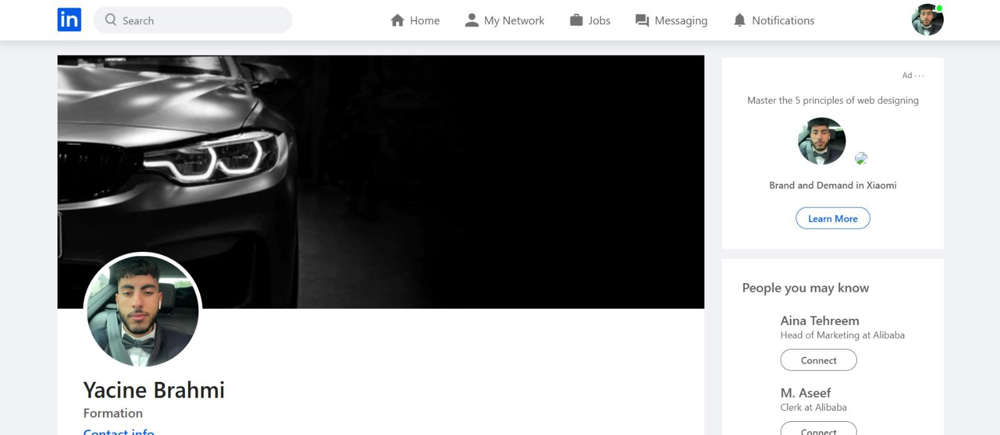
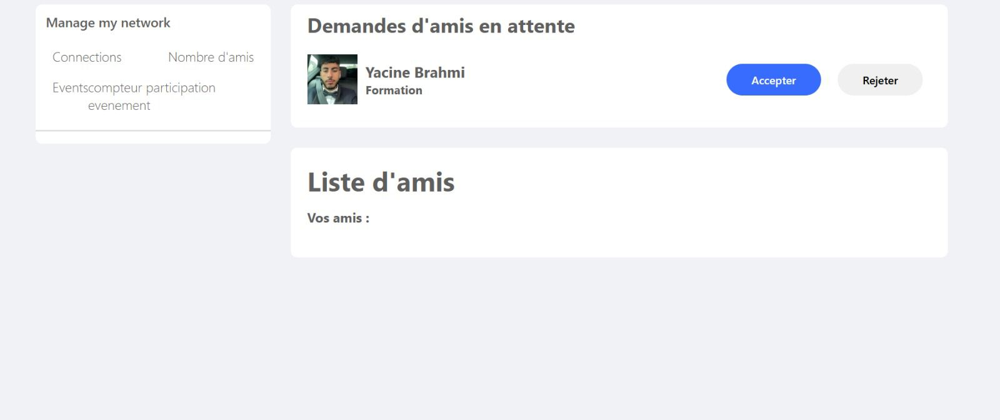
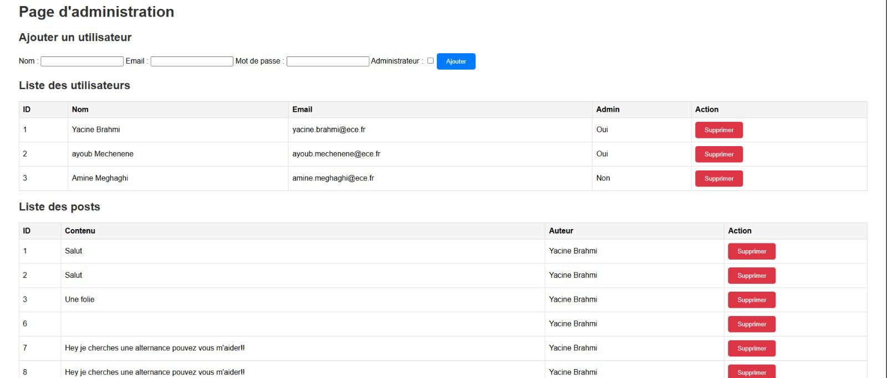
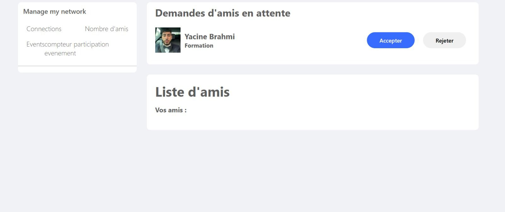
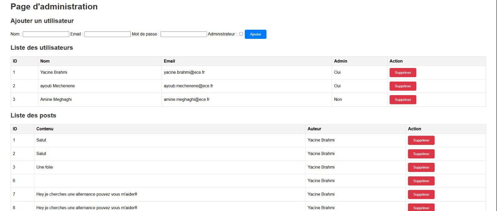

ECE In – Plateforme de réseau social professionnel
Objectif du projet
Concevoir et développer ECE In, une plateforme web de type réseau social professionnel pour la communauté ECE Paris (étudiants, enseignants, alumni, personnels). Le site permet aux utilisateurs de construire leur profil, gérer leur réseau, publier des contenus et accéder à des opportunités d’emploi et de stage.
Contexte
Projet « piscine » de Web dynamique ING3 réalisé en trinôme/quadrinôme. L’application est une architecture client–serveur avec base de données relationnelle (MySQL), back-end en PHP et front-end en HTML / CSS / JavaScript, le tout versionné avec Git.
Le sujet impose de se rapprocher des fonctionnalités d’un LinkedIn interne à l’ECE : gestion de profils, réseau, messagerie, publications, emplois, administration des utilisateurs et gestion des droits.
Fonctionnalités principales
Pages & navigation
- Accueil : présentation d’ECE In, « événement de la semaine », carrousel d’images, flux d’évènements du réseau.
- Mon Réseau : liste des contacts avec photo, description, liens vers leurs profils et suggestions de nouveaux contacts.
- Vous : page profil avec parcours de formation, projets, expériences et CV généré automatiquement à partir des données stockées.
- Notifications : événements liés à l’école, aux partenaires et au réseau (conférences, bourses, nouveaux postes, réussites des contacts).
- Messagerie : chat texte entre membres, avec historique des échanges.
- Emplois : liste d’offres (CDI, CDD, stages, alternances) liées à l’école et à ses partenaires.
Social & contenu
- Publication d’événements, photos, vidéos et CV sur son mur.
- Paramètres de visibilité (public, amis seulement, sélection de contacts).
- Réactions aux contenus du réseau : like, commentaire, partage.
- Création et gestion d’albums photos.
- Gestion des amis/connexions et recommandations (amis d’amis).
- Prise en compte de jours spéciaux (Noël, fêtes…) via thèmes graphiques adaptés.
Gestion des utilisateurs & sécurité
- Deux types de comptes : auteur (utilisateur classique) et administrateur.
- Inscription / création de compte par un administrateur avec adresse ECE, pseudo et nom, stockés en base de données.
- Authentification avec vérification des identifiants, gestion de sessions et protection des pages réservées.
- Interface admin pour ajouter/supprimer des comptes (ex-membres, nouveaux étudiants, etc.).
- Gestion des droits d’accès aux contenus en fonction du type d’utilisateur et des paramètres de confidentialité choisis.
Architecture technique
Front-end
- Pages HTML structurées autour d’un header/nav, d’un contenu central et d’un footer.
- Feuilles de style CSS pour le layout, la responsivité et les thèmes de couleurs.
- JavaScript pour les interactions : menus, carrousel, mises à jour dynamiques, etc.
- Possibilité d’utiliser un framework CSS (ex. Bootstrap) pour accélérer la mise en forme.
Back-end & base de données
- Back-end en PHP : gestion des formulaires, de la logique métier et des sessions.
- Base de données MySQL avec tables pour les utilisateurs, connexions, messages, posts, événements, offres d’emploi, etc.
- Conception via modèle entité association puis modèle relationnel (tables, clés primaires, clés étrangères).
- Scripts SQL d’import/export pour initialiser la base et la livrer.
Rôle personnel & développement
- Participation au développement full-stack (front + back) : HTML/CSS, JavaScript, PHP, MySQL.
- Implémentation d’un système d’authentification sécurisé avec gestion des sessions et séparation auteur / administrateur.
- Contribution à la mise en place de la base de données et des requêtes (CRUD pour utilisateurs, posts, commentaires, etc.).
- Travail sur les pages dynamiques : flux de posts, interactions (like, commentaire), affichage du réseau et des profils.
- Utilisation de Git (GitHub) pour le versioning et la répartition des tâches.
Résultats
La plateforme fournit un réseau social professionnel fonctionnel pour les membres de l’ECE : chaque utilisateur peut gérer son profil, son réseau, publier des contenus, consulter des opportunités d’emploi et interagir avec la communauté via notifications et messagerie. L’ensemble respecte les contraintes du sujet (fonctionnalités, technologies, deadlines et livrables de soutenance).
Galerie du site
Quelques captures de l'application web ECE In : connexion, profil, feed, réseau et administration.
 



Compétences développées
- Développement web full-stack (HTML, CSS, JavaScript, PHP, MySQL).
- Conception et implémentation d’une base de données relationnelle.
- Gestion d’authentification et de sessions utilisateurs.
- Architecture client–serveur et structuration d’un site dynamique complexe.
- Travail en équipe, gestion de projet et versioning Git.